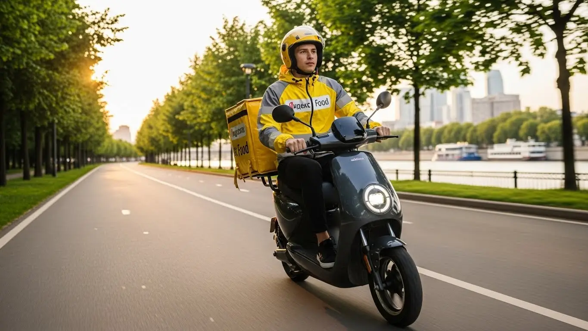

Работа курьером Яндекс Еда в Дзержинском 2025-2026: доход и условия
- Работа курьером Яндекс Еды в Дзержинском: для кого эта вакансия и что вы получите
- Сколько вы будете зарабатывать курьером в Дзержинском: калькулятор дохода и разбор выплат
- Реальный заработок курьера в Дзержинском: смены и месячный доход
- График работы и форматы занятости
- Требования к кандидату и документы
- Самозанятость, налоги и юридическая чистота
- Пошаговое оформление и первый выход на линию в Дзержинском
- Пешком, на вело или на авто: что выгоднее в Дзержинском
- Районы, маршруты и «топовые» зоны заказов в Дзержинском
- Безопасность, страховка, штрафы и оплата простоя
- Плюсы и возможные минусы работы курьером в Дзержинском
- Реальные истории и отзывы курьеров из Дзержинска
- Ответы на главные вопросы о работе курьером Яндекс Еды в Дзержинском
- Короткие ответы на главные вопросы
- Итоги и ваш следующий шаг
Все города
Здорово, будущий коллега! Думаешь крутить педали или жечь бензин, доставляя заказы в Дзержинском, но есть сомнения? Боишься, что реальный заработок съедят штрафы, ремонт велика и расходы на машину? А вечные пробки на Угрешской или Дзержинском шоссе убьют всё желание работать? Правильно делаешь, что сомневаешься. Забудь рекламные обещания про «доход до 100500 тысяч». Здесь будет только мясо: как на самом деле устроена работа курьером Яндекс Еда в Дзержинском и Лавке, без прикрас.
Поверь, Дзержинский — не Москва. Здесь свои «бермудские треугольники» в новостройках, где на поиск подъезда уходит 15 минут, свои часы пик и свои хитрости. Чтобы заранее изучить все нюансы, рекомендую посмотреть детальные условия и требования — вся актуальная информация про работу курьером Яндекс Еда в Дзержинском собрана на одной странице. Большинство новичков выгорают в первый же месяц, потому что не понимают местной специфики: гоняют впустую между центром и промзоной, не знают, где реально есть спрос, и в итоге сидят без заказов, глядя на свой падающий рейтинг и пустой кошелек.
В этом гиде мы честно посчитаем, сколько чистыми падает в карман пешему, вело- и автокурьеру в Дзержинском. Разберём по косточкам районы: где «рыбные» места с дорогими заказами, а куда лучше не соваться. Выясним, как погода и сезоны влияют на чек. Покажу на примерах, за что реально штрафуют и как этого избежать. И, конечно, сравним, что выгоднее — возить еду из ресторанов или продукты из Лавки.
Меня зовут Алексей. Я сам откатал не одну тысячу километров по Дзержинскому с желтым рюкзаком, а сейчас у меня свой небольшой таксопарк-партнёр, так что я вижу всю эту кухню с двух сторон — и со стороны курьера, и со стороны «парка». Никакой рекламы и воды, только факты и личный опыт. Так что устраивайся поудобнее, сейчас всё разложу по полочкам.
Прежде чем мы нырнём в детали, вот короткий навигатор по статье, чтобы ты сразу понял, где искать ответы на свои главные вопросы.
Что ты точно узнаешь из этого разбора
В этой статье ты ТОЧНО узнаешь:
- Сколько на самом деле зарабатывает пеший, вело- и автокурьер в Дзержинском за смену и в месяц?
- В каких районах Дзержинского больше всего заказов и как ловить «жирные» коэффициенты?
- За что реально снижают рейтинг и как избежать штрафов, чтобы не остаться без заказов?
- Что выгоднее в Дзержинском — ходить пешком, крутить педали или работать на авто?
- Как устроена самозанятость, сколько платить налогов и как быстро начать работать без лишней бюрократии?
- Как правильно выбирать слоты и время, чтобы не сидеть без дела и получать оплату даже за простой?
А если тебе некогда читать всю статью — переходи сразу к заключению, где ты найдёшь короткие ответы на все эти вопросы и указания, в каких разделах искать подробности.
А для начала — вот ключевые цифры по работе в Дзержинском в одной наглядной картинке, чтобы сразу было понятно, о каких деньгах и условиях идёт речь.
Работа курьером в Дзержинском: ключевые цифры
Работа курьером Яндекс Еды в Дзержинском: для кого эта вакансия и что вы получите
Кому подойдёт эта работа в Дзержинском
Давай по-честному, эта работа — как конструктор. Ты сам собираешь то, что тебе нужно: деньги, график, нагрузку. Поэтому вакансия курьера подходит очень разным людям. В первую очередь, это студенты. После пар есть 3–4 свободных часа — вышел на линию, заработал на свои расходы и не просишь у родителей. Идеально.
Во-вторых, это те, кому нужна подработка к основной зарплате. Работаешь ты в офисе до шести, а вечером или на выходных садишься на велосипед или в машину и спокойно добавляешь к своей зарплате 15–25 тысяч в месяц.
Также это отличный вариант для тех, кто временно остался без основной работы — деньги нужны здесь и сейчас, а Яндекс Еда обеспечивает ежедневные выплаты. И, конечно, для водителей, у которых есть свой автомобиль: заказы для автокурьеров всегда дороже, а покрывать можно весь город. Главное, что объединяет всех — это желание работать на себя, без начальников и строгого расписания.
Главные преимущества для жителей районов Центральный, Лесной, Южный
Главный кайф работы в Дзержинском — его компактность. Тебе не нужно тратить полтора часа, чтобы добраться до «рабочей зоны», как в Москве. Ты можешь жить в микрорайоне Центральный, выйти из подъезда, включить приложение «Яндекс Про» и через пять минут уже выполнять первый заказ из кафе на улице Ленина. То же самое касается и спальных районов.
Живёшь в микрорайоне Лесной или Южный? Отлично. Там полно и жилых домов, откуда идут заказы из магазинов и Яндекс Лавки, и небольших пиццерий. Ты работаешь буквально в своём дворе, знаешь все короткие пути и не тратишь ни время, ни деньги на дорогу до работы. Это огромное преимущество, которое многие недооценивают. Твоя смена начинается и заканчивается у твоего дома.
Краткое обещание по доходу и условиям
Если говорить о зарплате, то цифры в Дзержинском вполне достойные. При полной занятости, работая по 8–10 часов в день, можно стабильно зарабатывать 70 000 – 85 000 рублей в месяц. Если нужна подработка на несколько часов в день, рассчитывай на 25 000 – 40 000 рублей. За одну смену в среднем выходит от 2500 до 4000 рублей, в зависимости от способа передвижения и спроса.
Ключевые условия работы просты и прозрачны. Во-первых, свободный график — ты сам решаешь, когда выходить на линию. Во-вторых, ежедневные выплаты — заработал сегодня, получил деньги на карту сегодня же. В-третьих, начать можно без опыта, всему научат на коротком онлайн-инструктаже. И в-четвёртых, простое оформление — обычно как самозанятый, что занимает 15 минут онлайн. Никаких сложных собеседований и долгого ожидания.
Из практики: у меня был парень, студент местного колледжа, жил в Южном микрорайоне. Ему нужен был новый телефон. Он выходил на велосипеде каждый будний вечер на 3-4 часа и работал полные выходные. Заказы брал только в своём и соседних районах. За полтора месяца спокойно заработал 50 тысяч, не особо напрягаясь и не пропуская учёбу.
В общем, работа курьером в Яндекс Еде в Дзержинском — это в первую очередь удобный и быстрый способ заработать, который идеально подходит для местных жителей. Главный совет новичку: начни работать в своём районе. Ты его отлично знаешь, будешь чувствовать себя увереннее и быстрее выполнять заказы.
Сколько вы будете зарабатывать курьером в Дзержинском: калькулятор дохода и разбор выплат
Из чего складывается доход курьера
Твой заработок в Яндекс Еде — это не просто фиксированная ставка. Он складывается из нескольких частей, и важно понимать каждую из них. Во-первых, это базовая оплата за подачу в ресторан или магазин и доставку клиенту. Во-вторых, доплата за расстояние — чем дальше везти заказ, тем больше денег ты получишь. Это логично.
Самое интересное начинается дальше. Есть повышающие коэффициенты — в часы пик (обед с 12 до 15, ужин с 18 до 21), в плохую погоду (дождь, снег) или в выходные дни стоимость каждого заказа умножается на определённый коэффициент. Карта в приложении «Яндекс Про» окрашивается в яркие цвета — это сигнал, что пора выходить и зарабатывать больше. Плюс к этому идут бонусы за выполнение персональных целей (например, сделать 10 заказов за день) и чаевые от клиентов, которые полностью достаются тебе. И важная гарантия — оплата простоя. Если ты вышел на запланированный слот, а заказов мало, сервис всё равно начислит минимальную сумму. Эти выплаты страхуют от неудачного дня.
Как пользоваться калькулятором дохода
На сайте есть специальный калькулятор — это твой помощник для планирования. Пользоваться им элементарно. Сначала выбираешь свой город — Дзержинский. Затем указываешь, как планируешь доставлять: пешком, на велосипеде или на своём автомобиле.
После этого выставляешь ползунками, сколько часов в день и сколько дней в неделю ты готов работать. Например, 4 часа 5 дней в неделю. Нажимаешь кнопку «Рассчитать», и система показывает тебе примерный диапазон твоего дохода за день и за месяц. Понятно, что это не точная цифра до копейки, а прогноз, основанный на средних показателях. Но он даёт хорошее представление о том, на какую зарплату можно рассчитывать, и помогает определиться с графиком.
Примеры расчёта для пешего, вело- и авто‑курьера в Дзержинском
Давай на конкретных примерах, чтобы было понятнее.
- Пеший курьер. Студент, работает по 4 часа после учёбы в центре города, в районе улиц Ленина и Дзержинской. С фирменной термосумкой он выполняет в среднем 2–3 заказа в час. Его заработок за смену составит примерно 1400–1800 рублей.
- Велокурьер. Работает полный день, 8 часов, в выходной. Он быстро перемещается между спальными микрорайонами, например, из Лесного в Южный, и может брать больше заказов. За такой день доход велокурьера может составить 2800–3600 рублей.
- Автокурьер. Самый выгодный вариант. Водитель-курьер выходит на линию в пятницу вечером, в плохую погоду. Он берёт большие заказы из гипермаркетов по линии Яндекс Доставки и развозит их по всему городу и даже в соседние Котельники. За счёт повышенного коэффициента и объёма заказов за 8–9 часов он может заработать 4500–5500 рублей и больше.
Кейс из моего таксопарка: один из водителей, Михаил, на своей старенькой «Нексии» подрабатывает в Яндекс Еде по выходным. В прошлую субботу был сильный ливень. Он специально поехал в зону с самым высоким коэффициентом, который показывало приложение. Люди массово заказывали продукты и готовую еду. За 10 часов работы он заработал почти 7000 рублей до вычета расходов. Говорит, в такси в тот день было бы меньше.
Этот калькулятор — отличный ориентир. А если хочешь увидеть полные условия, требования и сразу подать заявку, загляни на страницу про работу курьером Яндекс Еда в твоём городе — там собрана вся актуальная информация.
Прикинь свой доход в Дзержинске
8 часов
5 дней
Примерный доход в месяц:
Расчет основан на средней ставке ~400 ₽/час в Дзержинске. Реальный доход зависит от спроса, бонусов и вашего графика.
Итог простой: твой заработок в Яндекс Еде напрямую зависит от тебя. Чем больше факторов ты используешь в свою пользу — транспорт, время, погоду, — тем выше будет итоговая сумма. Мой совет: не игнорируй «горящие» зоны на карте в «Яндекс Про». Даже если до неё нужно проехать 10 минут, это окупится повышенной стоимостью заказов и увеличит итоговые выплаты.
Реальный заработок курьера в Дзержинском: смены и месячный доход
Давай начистоту, без рекламных обещаний. Цифры в вакансиях — это ориентир, а реальный доход курьера в Дзержинском зависит только от тебя: как, когда и на чём ты работаешь. Я видел парней, которые на подработке делали больше, чем другие на полной ставке, просто потому что подходили к делу с головой. Здесь я разложу по полочкам, на какой заработок можно рассчитывать и как выжимать максимум из каждой смены.
Диапазон дохода для подработки и полной занятости
Сразу к делу. Твой заработок напрямую зависит от формата занятости и транспорта. В Дзержинском расклад примерно такой.
Если ты ищешь подработку на 2–4 часа в день, например, после основной работы или учёбы, ориентируйся на эти цифры:
- Пеший курьер: За короткую смену в 3–4 часа можно сделать 800–1500 рублей. Идеально для центра города, где много заказов на короткие дистанции, например, в районе улицы Ленина.
- Велокурьер: На велосипеде за то же время выйдет уже 1000–2000 рублей. Ты быстрее, покрываешь больше территории и можешь легко маневрировать между жилыми домами.
- Курьер на автомобиле: На машине за 3–4 часа в пиковое время можно заработать 1500–2500 рублей. Это самый выгодный вариант для вечерних слотов, когда много заказов из ресторанов и крупных магазинов, в том числе с доставкой в соседние Котельники.
При полной занятости (8–10 часов в день, 5 дней в неделю) цифры совсем другие. Это уже полноценная работа, где зарплата курьера может быть очень хорошей:
- Пеший курьер: В месяц выходит в среднем 40 000 – 65 000 рублей. Работа физически непростая, но стабильная.
- Велокурьер: Здесь доход уже интереснее, 55 000 – 80 000 рублей в месяц. Велосипед — золотая середина для такого города, как Дзержинский.
- Водитель-курьер: Самый высокий потенциальный доход. В месяц можно делать 75 000 – 120 000 рублей «грязными». Из этой суммы нужно вычесть расходы на бензин и обслуживание авто, но даже с учётом этого заработок остаётся самым высоким. На машине ты забираешь самые дорогие и дальние заказы.
Как район, время суток и погода влияют на доход
Запомни три кита высокого заработка курьера: время, место и погода. Если научишься их чувствовать, будешь всегда с деньгами. В Дзержинском это работает безотказно.
Время суток — твой главный инструмент. Самые «жирные» часы — это обеденный пик (с 12:00 до 14:00) и вечерний (с 18:00 до 21:00). В это время люди массово заказывают еду. Пятница и суббота вечером — это вообще джекпот, заказы идут один за другим. В приложении «Яндекс Про» такие зоны подсвечиваются фиолетовым, а к стоимости каждого заказа добавляется повышающий коэффициент.
Погода — твой союзник. Как только начинается дождь, снегопад или сильная жара, большинство людей предпочитает остаться дома. Спрос на доставку взлетает, а вместе с ним и коэффициенты. Да, работать в такую погоду сложнее, но за 2–3 часа можно заработать как за обычные 5–6. К тому же, клиенты в непогоду чаще оставляют хорошие чаевые — ценят твой труд.
Районы тоже играют роль. В Дзержинском самые активные зоны — это центр в районе Угрешской улицы, где много кафе, и новые жилые комплексы. Для курьеров на авто отдельная «золотая жила» — зона вокруг ТРЦ «МЕГА Белая Дача», откуда идёт огромный поток заказов из магазинов и фуд-корта. Не стоит зацикливаться на одном месте, смотри на карту спроса в приложении и будь мобильным.
Советы по увеличению заработка от опытных курьеров
Чтобы не просто работать, а именно зарабатывать, нужно подходить к сменам стратегически. Вот несколько проверенных советов от меня и моих ребят.
Во-первых, грамотно выбирай слоты. Если у тебя есть возможность, всегда бронируй плановые слоты на пиковые часы — вечер будней и выходные. Такие слоты часто идут с дополнительными бонусами и гарантией минимального дохода. Даже короткий двухчасовой слот в обеденный перерыв может принести больше, чем четыре часа работы днём.
Во-вторых, активно используй карту спроса в «Яндекс Про». Не сиди на месте в ожидании заказа, если видишь, что в соседнем квартале горит фиолетовая зона с высоким коэффициентом. Иногда есть смысл проехать километр, чтобы попасть в зону повышенного спроса и следующие несколько часов работать с хорошей доплатой.
В-третьих, сочетай форматы, если есть возможность. Например, если у тебя есть машина, используй её для работы в плохую погоду или для выполнения дальних заказов. Но если приехал в центр с плотной застройкой, где трудно с парковкой, иногда быстрее и выгоднее оставить машину и последние 200–300 метров до клиента пройти пешком. Гибкость — ключ к эффективности.
Вот недавний пример из практики. Один из моих водителей-курьеров работает на основной работе до 17:00. Он берёт слот с 18:00 до 22:00, сразу едет в район «МЕГИ», где в это время пик заказов. За вечер он стабильно делает 10–15 доставок, зарабатывая 2000–3000 рублей. В субботу он работает полный день и привозит домой 5000–6000 рублей. В итоге подработка приносит ему около 50 000 рублей в месяц дополнительно.
В общем, твой заработок в Дзержинском — это не лотерея, а результат твоих действий. Используй пиковые часы, следи за погодой и картой спроса, и деньги не заставят себя ждать. Мой главный совет: на старте не бойся экспериментировать с разными зонами и временем, чтобы найти свой личный «рецепт» максимального дохода.
График работы и форматы занятости
Главный козырь работы курьером — это свобода. Ты сам себе начальник и сам решаешь, когда и сколько работать. Это не просто красивые слова, а реальный инструмент, который позволяет получить тот самый свободный график и встроить доставку в любую жизнь: совмещать с учёбой, основной работой или просто работать тогда, когда есть настроение и нужны деньги.

Подработка после учёбы или основной работы
Совмещать доставку с другими делами проще простого, и многие именно так и начинают. Вот пара реальных сценариев, как это работает в Дзержинском.
Пример первый: студент местного филиала университета «Дубна». Пары у него заканчиваются в 15:00–16:00. Он живёт недалеко от центра, поэтому сразу после учёбы садится на велосипед и берёт слот на 4 часа, с 17:00 до 21:00. Так он попадает в самый вечерний пик, развозит заказы из кафе на Угрешской и Ленина по жилым районам. За такой вечер у него стабильно выходит 1500–2000 рублей. За неделю набегает 7-10 тысяч — отличная прибавка к стипендии.
Пример второй — мужчина 35 лет, который работает на одном из местных предприятий 5/2 с 8 до 17. Чтобы быстрее закрыть кредит, он использует свою машину для подработки: выходит на линию три-четыре раза в неделю по вечерам и плотно работает в субботу. Он берёт заказы не только по Дзержинскому, но и на доставку в Люберцы и Котельники. Вечерние смены приносят ему по 1500–2500 рублей, а за субботу он может заработать и 5000. В месяц такая подработка даёт ему дополнительные 30–40 тысяч рублей.
Полная занятость: как выглядит типичный день курьера
Если рассматривать доставку как основную работу, то день строится по определённому ритму, подстроенному под городскую жизнь. Типичный день курьера на полной занятости в Дзержинском выглядит примерно так.
Выход на линию обычно происходит в 10–11 утра. Утренние часы спокойные, в основном это доставка документов или заказы из магазинов. С 12:00 начинается обеденный пик, который длится до 14:00–14:30. В это время лучше находиться в центре города, где много офисов и кафе — заказы сыпятся без остановки.
После 15:00 наступает небольшое затишье. Это лучшее время, чтобы спокойно пообедать, отдохнуть или выполнить несколько несрочных доставок. А уже с 17:30–18:00 начинается главный марафон — вечерний пик, который продолжается до 21:00–22:00. Спрос максимальный, коэффициенты высокие. Опытные курьеры в это время смещаются из центра в густонаселённые жилые микрорайоны.
После 22:00 поток заказов спадает, и можно либо завершать смену, либо выполнить ещё пару «ночных» доставок и отправляться домой.
Как планировать слоты и выходы через приложение «Яндекс Про»
Твой главный рабочий инструмент — это приложение «Яндекс Про». Через него ты получаешь заказы, строишь маршруты и, что самое важное, планируешь свой график. Есть два основных формата: свободные выходы и плановые слоты. Свободный выход — это когда ты просто нажимаешь кнопку «На линию» и начинаешь работать в любое удобное время.
Плановые слоты — это отрезки времени (от 2 до 12 часов), которые ты бронируешь заранее в определённом районе. Я настоятельно рекомендую использовать именно их. Во-первых, для курьеров на плановых слотах часто действуют дополнительные бонусы и гарантии минимального заработка. Во-вторых, система будет отдавать тебе приоритет в распределении заказов.
Планирование очень простое: заходишь в раздел «Расписание», выбираешь день и видишь доступные слоты в разных частях города. Выбирай те, что совпадают с пиковыми часами, и в районах, которые ты хорошо знаешь. И самое главное — не опаздывай к началу слота. Опоздание или ранняя отмена могут негативно сказаться на твоём рейтинге, а от него зависит, как много заказов ты будешь получать в будущем.
Вот как это выглядит на практике у одного из велокурьеров, работающего полный день. Он планирует свою неделю заранее, бронируя в понедельник слоты на самые «хлебные» часы — с 12 до 15 и с 18 до 22. Он работает в двух-трёх соседних зонах, которые отлично знает. Такой подход обеспечивает ему стабильный поток заказов и доход в районе 3500–4000 рублей в день.
В итоге, гибкость графика — это реальность, но она требует дисциплины. Чтобы хорошо зарабатывать, нужно не просто выходить на линию когда вздумается, а планировать свои смены. Мой совет новичкам: начните с плановых слотов в своём районе. Так вы быстрее освоитесь, поймёте ритм работы и начнёте стабильно зарабатывать.
Требования к кандидату и документы
Многих новичков пугает бумажная волокита и строгие требования, но на деле всё гораздо проще. Давай разберём, какие условия и требования ждут тебя, чтобы начать работу курьером в Дзержинском. По своему опыту скажу: если есть голова на плечах и желание работать, с документами проблем не возникнет.
Возраст, гражданство и базовые условия
Главное и самое строгое правило — возраст. Начать работать курьером в Яндекс Еде можно только с 18 лет. Никаких исключений, даже с согласия родителей, здесь нет. Это связано с материальной ответственностью и законодательством РФ. По гражданству условия тоже чёткие: нужен паспорт гражданина Российской Федерации или одной из стран ЕАЭС (Беларусь, Казахстан, Армения, Киргизия).
Что касается физической формы, от тебя не требуют олимпийских рекордов. Если ты пеший курьер, будь готов много ходить. Для велокурьера важна выносливость, особенно если придётся крутить педали по всему городу. Водителю-курьеру физически проще, но требуется внимательность за рулём. В целом, если у тебя нет серьёзных медицинских противопоказаний к физической активности, ты справишься.
Какие документы нужны для работы курьером
Чтобы не бегать в последний момент, подготовь пакет документов заранее. Список небольшой, и большинство бумаг у тебя уже есть на руках. Вот что точно понадобится для оформления:
- Паспорт. Основной документ, удостоверяющий твою личность и гражданство.
- ИНН (Идентификационный номер налогоплательщика). Необходим для регистрации в качестве самозанятого. Если ты не знаешь свой номер или потерял свидетельство, его можно за пару минут бесплатно узнать на сайте ФНС или через Госуслуги.
- Банковская карта. Нужна личная дебетовая карта любого российского банка, оформленная на твоё имя. Именно на неё будут приходить ежедневные выплаты. Карта должна быть активной, с положительным балансом.
- Медицинская книжка. Требуется не всегда, но её наличие будет большим плюсом. Медкнижка обязательна, если ты планируешь доставлять заказы из дарксторов (складов) Яндекс Лавки или некоторых партнёрских магазинов. Для большинства заказов из ресторанов на старте она не нужна, но лучше уточнить этот момент при подключении в Дзержинском.
- Для автокурьеров: водительское удостоверение (ВУ) и свидетельство о регистрации транспортного средства (СТС).
Можно ли работать с 16 лет и какие есть альтернативы
Часто спрашивают, можно ли устроиться в Яндекс Еду с 16 или 17 лет. Отвечаю прямо: нет, нельзя. Сервис заключает договор только с совершеннолетними. Это связано с полной материальной ответственностью за заказы и денежные средства, а также с особенностями налогового режима для самозанятых (НПД).
Если тебе ещё нет 18, а заработать хочется, не отчаивайся. Рассмотри другие варианты подработки, которые доступны подросткам по закону. Например, можно раздавать листовки, помогать с выгулом собак по объявлениям в местных чатах Дзержинского или поискать вакансии для школьников на лето. Это поможет набраться первого опыта, а как только исполнится 18 — добро пожаловать в доставку.
Из практики: У меня был случай с парнем, ему 19 лет, живёт в Дзержинском. Он хотел быстро начать работать после армии. Паспорт и карта были, а вот про ИНН он даже не думал. Расстроился, думал, придётся идти в налоговую, стоять в очередях. Я ему показал, как зайти на сайт nalog.ru, ввести паспортные данные и через минуту получить свой номер. Он в тот же день зарегистрировался как самозанятый и на следующий уже вышел на свой первый слот. Вся «бюрократия» заняла у него от силы полчаса.
Самозанятость, налоги и юридическая чистота
Многих пугают слова «налоги» и «самозанятость», кажется, что это сложно и невыгодно. На самом деле, это самый простой и легальный способ работать с Яндексом напрямую. Это не трудовой договор, где есть начальник и жёсткий график, а партнёрство. Ты — независимый исполнитель, у которого есть свободный график, и ты сам решаешь, когда и сколько работать. Давай разберёмся, как это устроено.
Почему курьеры Яндекс Еды работают как самозанятые
Формат самозанятости (или налог на профессиональный доход, НПД) был создан специально для тех, кто работает на себя. Для Яндекса это удобный способ сотрудничать с тысячами курьеров по всей стране, а для тебя — сплошные плюсы. Во-первых, это полностью официальный доход. Ты можешь взять кредит, подтвердить свой заработок для визы или других целей.
Во-вторых, никакой сложной бухгалтерии. Тебе не нужно нанимать бухгалтера или разбираться в декларациях. Все доходы автоматически фиксируются в приложении «Яндекс Про», а налог рассчитывается сам. В-третьих, это даёт тебе максимальную гибкость. Ты не привязан к одному парку-партнёру, можешь работать напрямую с сервисом и получать ежедневные выплаты. Это честная и прозрачная схема, которая защищает и тебя, и заказчика.
Как за 10 минут оформить самозанятость через «Мой налог»
Регистрация самозанятости — дело нескольких минут, и для этого даже не нужно выходить из дома. Всё делается через официальное приложение от Федеральной налоговой службы «Мой налог».
Вот простая пошаговая инструкция:
- Скачай приложение «Мой налог» в Google Play или App Store.
- Открой приложение и выбери способ регистрации. Самый быстрый — по паспорту РФ.
- Отсканируй главный разворот паспорта прямо камерой телефона. Приложение само распознает все данные.
- После сканирования программа попросит сделать селфи, чтобы подтвердить твою личность. Просто моргни на камеру.
- Подтверди номер телефона и выбери регион ведения деятельности — для нас это будет Московская область.
- Готово! Ты официально стал самозанятым. Весь процесс занимает не больше 10 минут. Никаких поездок в налоговую, очередей и бумажных заявлений.
Сколько и как платить налоги
Ставка налога для самозанятого курьера, работающего с Яндекс Едой, фиксированная — 6% от дохода. Это процент от поступлений, которые приходят от юридического лица (то есть от Яндекса). Никаких других скрытых сборов или отчислений нет.
Процесс оплаты максимально автоматизирован. Приложение «Яндекс Про» само передаёт данные о твоём заработке в «Мой налог». Раз в месяц, до 12-го числа, в приложении «Мой налог» формируется квитанция с суммой налога за предыдущий месяц. Тебе остаётся только нажать кнопку «Оплатить» до 28-го числа. Можно привязать банковскую карту, и платёж будет списываться автоматически. Это гораздо проще и безопаснее, чем работать неофициально. К тому же, всем новым самозанятым государство даёт бонус — 10 000 рублей на уплату налога, что на первое время снижает ставку.
Из практики: Ко мне в таксопарк как-то пришёл устраиваться водителем мужчина лет 35 из Дзержинского. Раньше он работал на стройке, получал всё в конверте. Боялся самозанятости как огня, думал, что его «сразу обдерут налогами». Я сел с ним и за 10 минут зарегистрировал его в приложении «Мой налог». Когда он через месяц увидел свой первый налог — около 3000 рублей с дохода в 50 тысяч — он был удивлён, насколько это просто и немного. А через полгода этот официальный доход помог ему оформить кредитную карту с хорошим лимитом.
Пошаговое оформление и первый выход на линию в Дзержинском
Многих, кто ищет подработку, пугает бумажная волокита и долгие собеседования. Забудь, здесь всё иначе. Весь процесс от анкеты до первого заработка построен так, чтобы ты мог стать курьером максимально быстро, иногда даже в тот же день. Условия работы простые и понятные, чтобы не отнимать у тебя лишнего времени. Главное — твоё желание, а с бюрократией проблем не будет.
Шаг 1–2: анкета и онлайн‑обучение
Всё начинается с простой анкеты на сайте. Никаких резюме на три страницы — только базовые данные: ФИО, номер телефона, город Дзержинский. Заполняется минут за десять. После этого система проверит твои данные, обычно это происходит быстро и автоматически. Если всё в порядке, тебе откроется доступ к короткому онлайн-обучению.
Это не нудные лекции, а несколько коротких видео и тесты. Тебе расскажут об основах работы с приложением «Яндекс Про» и стандартах сервиса Яндекс Еда: как общаться с клиентами и представителями ресторанов, как обращаться с заказами. Отдельный блок посвящён безопасности на маршруте. Тесты простые, на здравый смысл, так что сдать их не составит труда. Весь процесс обучения занимает от силы час-полтора.
Шаг 3: получение сумки и доступа к заказам в Дзержинском
После успешного прохождения тестов остаётся последний шаг — получить фирменный термокороб. Без него система не даст тебе доступ к заказам из ресторанов и магазинов. В Дзержинском и ближайших городах есть несколько способов это сделать. Чаще всего термосумку выдают в курьерских центрах или офисах партнёров. Иногда доступна опция доставки прямо к тебе домой.
Точные адреса и доступные варианты получения ты увидишь в приложении «Яндекс Про» после одобрения анкеты. Как только ты получишь сумку и активируешь её в приложении, сфотографировав с нужных ракурсов, тебе откроется доступ к заказам. С этого момента ты — полноценный курьер сервиса.
Шаг 4: первый слот и первый доход
Теперь ты готов зарабатывать. В приложении «Яндекс Про» ты увидишь карту Дзержинского с доступными зонами и слотами. Слот — это запланированный отрезок времени, например, с 18:00 до 22:00, в течение которого ты обязуешься быть на линии в выбранном районе. Для начала советую выбрать короткий слот на 2–4 часа в знакомом тебе районе. Так будет проще сориентироваться и выполнить первые заказы без лишнего стресса.
Выбираешь слот, выходишь на линию, и приложение начинает предлагать тебе заказы. Выполняешь первый, второй, третий — и вот на твоём балансе уже первые деньги. Сервис предлагает ежедневные выплаты, так что заработок можно вывести на карту почти сразу. Многие ребята свой первый доход получают уже в день регистрации или на следующий.
Расскажу про парня, который недавно у нас начинал. Заполнил анкету в 10 утра, к обеду закончил обучение. Съездил в ближайший к городу центр в Люберцах, забрал сумку. Вечером того же дня взял тестовый слот на три часа в своём микрорайоне. Спокойно выполнил четыре заказа, заработал около 1200 рублей. Говорит, сам не ожидал, что всё окажется так быстро и просто.
В итоге, весь путь от заявки до первых денег занимает минимум времени. Главное — заранее подготовь паспорт и ИНН, чтобы не тратить время на их поиски при заполнении данных для оформления. Если всё делать последовательно, можно начать работать курьером уже сегодня вечером.
Пешком, на вело или на авто: что выгоднее в Дзержинском
Выбор транспорта — ключевой момент, от которого напрямую зависит твой заработок и комфорт. В Дзержинском, как и в любом подмосковном городе, у каждого способа доставки в Яндекс есть свои плюсы и минусы. Город не очень большой, но со своими особенностями: где-то плотная застройка, где-то частный сектор, а где-то нужно быстро проскочить на другой конец. Давай разберёмся, что и где выгоднее.
Пеший курьер: для центра и плотной застройки в Дзержинском
Если у тебя нет машины или велосипеда, или ты просто хочешь совместить работу с прогулкой — формат пешего курьера станет отличным выбором. Он идеален для центральной части города, особенно для старта без опыта. Районы улиц Ленина, Дзержинской, Шама — это плотная застройка, множество магазинов, кафе и жилых домов на небольшом пятачке. Здесь короткие расстояния, и на машине ты больше простоишь в поисках парковки, чем будешь ехать.
Пешком можно срезать путь через дворы и скверы, проходить там, где транспорту дороги нет. Это экономит время и нервы. К тому же у тебя нулевые расходы на топливо и обслуживание транспорта. Да, много заказов за час не сделаешь, но для подработки на несколько часов в день в центре — это отличный и абсолютно незатратный вариант.
Велокурьер: быстрые доставки между спальными районами
Велосипед — это золотая середина. Как велокурьер, ты быстрее пешехода, но всё ещё не зависишь от пробок и парковок, как автомобилист. Для Дзержинского это очень актуально, особенно для связи между разными частями города. Например, доставить заказ из торгового центра на улице Лесной в микрорайон Центральный у Угрешской улицы на велосипеде получится гораздо быстрее, чем на машине в час пик.
Велосипед даёт манёвренность и скорость на дистанциях 2–5 км, которые составляют большинство заказов. Это, по сути, оплачиваемый фитнес: ты и деньги зарабатываешь, и форму поддерживаешь. Расходы минимальны — только на обслуживание велосипеда. Для активных людей, которые хотят работать по 6–8 часов в день, это, пожалуй, самый сбалансированный и выгодный формат.
Водитель‑курьер: заказы по всему городу и пригороду Котельники, Люберцы
Работа курьером на своем авто открывает доступ к самым денежным заказам. Это доставка в отдалённые районы, частный сектор, а главное — в соседние города, такие как Котельники и Люберцы. Часто бывают заказы из крупных торговых центров вроде «МЕГА Белая Дача» в Дзержинский, и без машины их просто не выполнить. Водитель-курьер может брать крупные и тяжёлые заказы из супермаркетов, которые хорошо оплачиваются.
Особенно выгодно работать на машине в плохую погоду — дождь, снег или сильный мороз. В это время количество пеших и велокурьеров на линии резко сокращается, а спрос на доставку взлетает. Коэффициенты растут, и за одну поездку можно заработать как за несколько обычных. Да, есть расходы на бензин и амортизацию, но при грамотном подходе доход курьера на авто всегда будет выше.
Как-то раз в субботу лил сильный дождь. Я выехал на своей машине на линию. Сразу прилетел заказ из ресторана на большую компанию, везти на другой конец города. Потом — несколько заказов подряд из гипермаркета в Котельниках жителям Дзержинского. Люди не хотели выходить из дома, щедро оставляли чаевые. За 6 часов работы вышло около 5000 рублей чистыми, за вычетом бензина. Пешком или на велосипеде в такую погоду я бы и половины не заработал.
Сравнение форматов доставки в Дзержинском
| Параметр | Пеший курьер | Велокурьер | Водитель-курьер |
|---|---|---|---|
| Зона работы | Центр, радиус 1-2 км | Весь город, радиус 2-5 км | Город и пригороды (Котельники, Люберцы) |
| Средний доход в час | 250-400 ₽ | 400-600 ₽ | 600-900 ₽ (и выше) |
| Расходы | Нет | Минимальные (обслуживание) | Бензин, амортизация, страховка |
| Главный плюс | Простота и отсутствие затрат | Скорость и маневренность | Высокий доход, комфорт, дальние заказы |
| Главный минус | Низкая скорость, зависимость от погоды | Физическая нагрузка, сезонность | Пробки, расходы на авто, парковка |
В общем, универсального ответа нет, ведь каждый формат хорош для своих задач. Мой совет новичку: начни с того, что у тебя уже есть. Если есть велосипед — отлично, выезжай на нём. Если нет — попробуй поработать пешком в своём районе. Так ты поймёшь механику, оценишь спрос, а дальше уже решишь, стоит ли пересаживаться на другой транспорт.

Районы, маршруты и «топовые» зоны заказов в Дзержинском
Чтобы работа курьером в Яндекс Еде приносила хороший доход, а не только усталость, нужно понимать, где и когда концентрируются заказы. Просто кататься по всему городу в надежде что-то поймать — прямой путь к пустому кошельку и потраченным нервам. Твоя главная задача — научиться читать карту спроса в Дзержинском и быть там, где ты нужен клиентам больше всего. Это как рыбалка: нужно знать «рыбные места».
Где больше всего заказов: ТРЦ, бизнес‑центры и центральные улицы
Самые выгодные зоны, где почти всегда есть повышенный спрос, — это, конечно, крупные торговые центры и центральные улицы. В Дзержинском в первую очередь смотри на ТРЦ «Дзержинец» и ТЦ «Рояль». Вокруг них сосредоточено огромное количество кафе, ресторанов быстрого питания и магазинов. В обеденное время (с 12:00 до 15:00) и вечером (с 18:00 до 21:00) здесь на карте в «Яндекс Про» почти всегда будут «фиолетовые зоны». Это значит, что действует повышающий коэффициент, и за каждый заказ ты получишь больше денег.
Кроме того, стабильный поток заказов идёт из центра города — район проспекта Ленина, площади Дзержинского и прилегающих улиц. Здесь много офисов, сотрудники которых заказывают бизнес-ланчи. Вечером и в выходные это популярное место для отдыха горожан, которые заказывают еду на дом. Если хочешь максимум заказов за минимум времени, начинай смену именно в этих локациях. Они одинаково хороши как для пешего курьера, так и для курьера на велосипеде, так как всё находится компактно.
Работа в своём районе: примеры для популярных жилых кварталов
Многие новички думают, что весь заработок только в центре, и тратят время и бензин, чтобы туда добраться. Это ошибка. Зарабатывать можно и нужно в своём районе, особенно если ты живёшь в крупных жилых массивах. Например, в микрорайонах «Западный-1» или «Прибрежный» полно своих точек притяжения: местные пиццерии, суши-бары, а также сетевые магазины вроде «Магнита» и «Пятёрочки», откуда тоже идёт много заказов на доставку продуктов.
Главный плюс работы рядом с домом — экономия. Это идеальный вариант для подработки: ты не тратишь час на дорогу до центра, знаешь все дворы, подъезды и короткие пути. Спрос в спальных районах особенно высок в будни вечером, когда люди возвращаются с работы, и в течение всех выходных. Так что, если видишь хороший коэффициент в своём районе, смело бери слот и работай на знакомой территории.
Как выбирать зоны и слоты в «Яндекс Про», чтобы не мотаться впустую
Приложение «Яндекс Про» — твой главный инструмент для планирования. Основное, на что нужно смотреть, — это карта спроса. Она в реальном времени подсвечивается разными цветами: чем ярче и темнее цвет (от жёлтого к фиолетовому), тем выше в этой зоне спрос и, соответственно, твой потенциальный заработок. Не ленись открывать карту за 15–20 минут до начала слота, чтобы понять, куда лучше сместиться.
Старайся выстраивать маршруты так, чтобы не было «пустых» пробегов. Система сама пытается тебе в этом помочь, предлагая следующий заказ недалеко от точки, где ты завершил предыдущий. Это называется «цепочка заказов». Если ты видишь, что после доставки в отдалённый район там нет спроса, лучше сразу двигаться в сторону ближайшей «горящей» зоны, а не ждать у моря погоды. Грамотное планирование слотов и маршрутов — это 50% твоего успеха.
Из практики: у меня был парень на старой «девятке», который поначалу жаловался на низкий доход. Он просто включал приложение и ждал заказов у своего дома на окраине. Я ему посоветовал простую тактику: начинать вечернюю смену в 17:30 у ТЦ «Рояль», собирать там пик заказов из фудкорта до 20:00, а потом смещаться в густонаселённый Западный район, развозя продукты из супермаркетов. Уже через неделю его средний доход за смену вырос почти на 40%, а расходы на бензин даже немного снизились за счёт отсутствия холостых пробегов.
В общем, твой заработок как курьера напрямую зависит от того, насколько грамотно ты используешь информацию о спросе. Изучай карту города, следи за коэффициентами в приложении и не бойся менять локацию, если видишь, что в текущей зоне заказов стало мало. Мой совет: всегда имей в голове 2-3 «запасные» точки, куда можно быстро переместиться, если основной план не сработал.
Безопасность, страховка, штрафы и оплата простоя
Работа курьера — это не только про деньги и заказы, но и про ответственность. Ты постоянно в движении, на дороге, общаешься с разными людьми. Поэтому важно говорить начистоту о безопасности, правилах и о том, как сервис защищает тебя в непредвиденных ситуациях. Это не для того, чтобы напугать, а чтобы ты чувствовал себя уверенно и знал, что делать, если что-то пойдёт не так.
Бесплатная страховка на сменах и что она покрывает
Один из самых важных моментов, о котором многие новички даже не знают, — это бесплатная страховка. Как только ты выходишь на активный слот, твоя жизнь и здоровье автоматически страхуются сервисом. Тебе за это платить ничего не нужно. Это не просто формальность, а реальная защита, которая покрывает несчастные случаи во время доставки.
Что это значит на практике? Если ты, например, велокурьер и попал в ДТП, или пеший курьер, который поскользнулся зимой и получил травму, страховка покроет расходы на лечение. Суммы покрытия серьёзные, доходят до 2 миллионов рублей. В случае происшествия нужно сразу же связаться со службой поддержки через «Яндекс Про». Они зафиксируют обращение и подробно объяснят, какие документы собрать и что делать дальше. Ты не остаёшься с проблемой один на один.
Правила безопасности на дороге и при доставке
Банальные вещи, о которых нельзя забывать, потому что от них зависит твоё здоровье и доход. Для пеших курьеров главное — быть предсказуемым: переходить дорогу по «зебре», в тёмное время суток носить светоотражающие элементы. Для велосипедистов — обязательно соблюдать ПДД, использовать фонари, шлем и не гонять по тротуарам, пугая пешеходов. Для водителей-курьеров — не отвлекаться на телефон за рулём, использовать держатель и соблюдать скоростной режим, даже если очень торопишься.
Отдельно скажу про работу с заказами. Всегда проверяй, что пакеты надёжно закреплены в термосумке или термокоробе, супы не прольются, а пицца лежит горизонтально. Если у тебя заказ с оплатой наличными, будь внимателен при расчёте, спокойно пересчитывай сдачу. В плохую погоду — дождь, снег, гололёд — двигайся медленнее и аккуратнее. Лучше опоздать на пару минут и извиниться перед клиентом, чем повредить заказ или, что хуже, самому попасть в неприятности.
Какие бывают штрафы и как их избежать
Давай честно: система штрафов или, как это чаще называется, снижение приоритета, существует. Но её цель — не отобрать у тебя деньги, а поддерживать качество сервиса. Штрафы применяются только за серьёзные и систематические нарушения. Чаще всего проблемы возникают из-за нескольких вещей: грубость клиенту или сотрудникам ресторана, порча заказа из-за неаккуратной перевозки или регулярные сильные опоздания.
Как этого избежать? Просто работай на совесть. Будь вежлив, даже если клиент не в настроении. Если видишь, что опаздываешь, — предупреди поддержку. Если ресторан долго готовит заказ, не стой молча, а нажми соответствующую кнопку в приложении. Не отменяй уже принятые заказы без веской причины. По сути, если ты относишься к работе ответственно, то никогда не столкнёшься ни со штрафами, ни с понижением рейтинга.
Что такое оплата простоя и как она защищает ваш доход
Это ключевое преимущество, которое многие недооценивают. «Оплата простоя» — это твоя финансовая подушка безопасности. Представь ситуацию: ты взял плановый слот, приехал в назначенную зону, готов работать, а заказов временно нет. В большинстве других сервисов ты бы просто терял время и деньги. В Яндекс Еде всё иначе: если ты находишься на линии, но заказы не поступают, сервис начисляет тебе минимальную гарантированную оплату за это время.
Эта система защищает твой доход и делает его более предсказуемым. Ты можешь быть уверен, что если выделил время на работу, то в любом случае получишь за него деньги. Сумма компенсации зависит от города и зоны, но сам факт её наличия — это огромный плюс. Это показывает, что сервис ценит твоё время и страхует от ситуаций, когда спрос временно падает по независящим от тебя причинам.
Был у меня случай с парнем-студентом, который работал на велосипеде. В первый же месяц он неудачно упал на мокрой дороге и сильно ушиб руку. Был в панике: думал, что придётся платить за лечение из своего кармана, да ещё и работать не сможет. Он связался с поддержкой, и ему пошагово объяснили, как воспользоваться страховкой. В итоге все медицинские расходы были покрыты. Этот случай наглядно показал ему, что бесплатная страховка — это не пустой звук, а реальная помощь в трудную минуту.
Итак, запомни главное: работай аккуратно и соблюдай правила — это убережёт тебя и от травм, и от штрафов. Знай, что на смене ты застрахован, а твоё время защищено оплатой простоя. Мой совет: перед первым выходом на линию ещё раз спокойно перечитай все правила и инструкции в приложении. Это займёт 15 минут, но сэкономит тебе кучу нервов и денег в будущем.
Плюсы и возможные минусы работы курьером в Дзержинском
Давай по-честному, без прикрас. Любая работа — это баланс хорошего и того, с чем придётся мириться. Доставка в сервисах вроде Яндекс Еды — не исключение. Важно, чтобы ты сразу понимал, что тебя ждёт на улицах Дзержинска, и мог взвесить все за и против. Я видел, как ребята приходили, горели идеей, а потом сдувались через неделю, потому что представляли себе всё иначе. А другие, наоборот, находили в этом деле себя и стабильный доход.
Сильные стороны работы курьером в Дзержинском
Главный козырь этой работы — свобода. Ты сам себе начальник, у тебя свободный график. Никто не стоит над душой, не контролирует, когда ты пьёшь кофе, а когда работаешь. Ты сам решаешь, когда выходить на линию, на сколько часов и в каком районе Дзержинска кататься. Это идеально подходит, если у тебя есть основная работа, учёба или просто не хочешь жить по графику с девяти до шести.
Второй важный момент — деньги. В Яндекс Еде ежедневные выплаты приходят на карту. Сделал несколько заказов вечером — на следующее утро уже можешь тратить заработанное. Это очень выручает, когда срочно нужны наличные. К тому же, всё официально: ты работаешь как самозанятый, платишь небольшой налог, и у тебя идёт подтверждённый доход. Плюс, не забывай про страховку на время смен — если что-то случится, ты не останешься один на один с проблемой. И, конечно, возможность работать рядом с домом. Живёшь в Западном районе — можешь брать заказы там, не тратя время и деньги на дорогу до центра.
С какими сложностями чаще всего сталкиваются курьеры
Теперь о другой стороне медали. Во-первых, это физическая нагрузка. Если ты пеший курьер или на велосипеде, будь готов много ходить и крутить педали. Особенно поначалу ноги будут гудеть. Во-вторых, погода. В Дзержинске, как и везде, бывают и дожди, и снегопады, и жара. Работать в ливень или мороз — то ещё удовольствие.
Но тут есть и плюс: в плохую погоду заказов обычно больше, а коэффициенты выше, так что можно хорошо заработать. Главное — правильно одеться: непромокаемая куртка, удобная обувь, термобельё зимой и фирменный термокороб для сохранения температуры заказов.
Бывают и простои, когда заказов мало. Сидишь в зоне ожидания, а на экране в приложении Яндекс Про тишина. Это нервирует, особенно новичков. Но со временем ты научишься выбирать «рыбные» места и время — обеденные часы, вечера, выходные. И не забывай про общение с людьми. Клиенты бывают разные: кто-то поблагодарит и оставит чаевые, а кто-то будет недоволен, что ты опоздал на две минуты из-за закрытого домофона. Важно сохранять спокойствие и вежливость, это напрямую влияет на твой рейтинг и, соответственно, на доход.
Кому такая работа подходит, а кому лучше поискать другой формат
Давай начистоту. Эта работа идеально подходит активным и самостоятельным людям. Если ты студент и ищешь подработку после пар, если у тебя есть основная работа со сменным графиком, если ты просто не можешь сидеть на одном месте в офисе — это твой вариант. Также это отличный старт для тех, у кого нет опыта работы: требования минимальные, всему научат. Если ты любишь свой город, хорошо в нём ориентируешься и тебе нравится движение — ты быстро втянешься.
С другой стороны, если ты ищешь стабильный оклад, который не зависит от твоих усилий, если любая физическая активность для тебя — мука, а общение с незнакомыми людьми вызывает стресс, то лучше поискать что-то другое. Работа курьером — это про дисциплину и самоорганизацию. Если ты не готов выходить на смену, когда на улице дождь, или спокойно реагировать на капризного клиента, то заработок будет нестабильным, а работа — в тягость. Подумай, что для тебя важнее: свобода и прямой заработок или предсказуемость и комфорт офиса.
Вот недавний случай из практики. Парень, водитель-курьер Яндекс Доставки, вышел на смену в Прибрежном районе. День был спокойный, заказов немного. Вдруг начался сильный ливень. Многие пешие и велокурьеры сошли с линии. А он остался. В итоге приложение Яндекс Про засыпало его заказами с повышенным коэффициентом. За три часа под дождём он сделал почти дневную норму, развозя заказы по всему району и в соседний 8-й микрорайон. Да, промок, пока добегал от машины до подъезда, но был доволен.
В общем, работа курьером в Дзержинске — это палка о двух концах. С одной стороны — гибкость, живые деньги и самостоятельность. С другой — зависимость от погоды, физическая нагрузка и человеческий фактор. Мой совет: если сомневаешься, попробуй начать с коротких слотов по 2–3 часа в своём районе. Так ты поймёшь, твоё это или нет, не вкладывая сразу много сил и времени.
Реальные истории и отзывы курьеров из Дзержинска
Теория — это хорошо, но лучше всего о работе говорят реальные люди, которые каждый день выходят на линию. Я собрал несколько отзывов от курьеров Яндекс Еды из Дзержинска, чтобы у тебя сложилась полная картина.
История студента местного политехнического института, который совмещает учёбу и доставку
Вот что рассказывает Кирилл, ему 20 лет, учится в местном политехе. Живёт он в Западном районе, недалеко от проспекта Циолковского. Для него доставка заказов из Яндекс Еды — это идеальная подработка. Обычно он заканчивает учёбу в 3-4 часа дня, немного отдыхает и выходит на велослот часов с пяти вечера до девяти. Работает в основном в своём и соседних районах, где всё знает.
По его словам, в будний вечер получается сделать 8–12 заказов. В среднем за такую 4-часовую смену выходит 1200–1800 рублей, плюс чаевые. В выходные старается брать смены подлиннее, часов на 6–8, и тогда заработок за день может доходить и до 3000 рублей. За неделю набегает 7–10 тысяч. Этих денег ему хватает на личные расходы, и он не просит у родителей. Говорит, что это как оплачиваемый фитнес: и в форме себя держишь, и деньги зарабатываешь.
Опыт автокурьера, который выходит в пиковые часы
А вот история от Игоря, ему 35, у него своя машина. Днём он занимается своими делами, а как водитель-курьер Яндекс Доставки работает по вечерам и в выходные — ловит самые «жирные» часы. Его стратегия — выходить на линию с 18:00 до 22:00 в будни и почти на весь день в субботу и воскресенье. Он не сидит в одном районе, а смотрит по карте в «Яндекс Про», где горит фиолетовый — знак высокого спроса.
Чаще всего он катается между центром, где много ресторанов, и крупными спальными районами. На машине он легко выполняет дальние заказы, которые не берут пешие курьеры. Особенно ему нравится работать в плохую погоду, когда заказов вал, а конкуренции меньше. Такой формат позволяет ему зарабатывать 25–35 тысяч в месяц, тратя на это неполный рабочий день. Он говорит, что это отличный способ заставить машину приносить доход, а не только тянуть деньги на бензин и обслуживание.
Мнение пешего или вело‑курьера о работе в центре и спальниках
Многие ребята, которые работают пешком или на велосипеде, делятся похожими наблюдениями. Работа пешим курьером или велокурьером в центре, например, в районе ТЦ «Дзержинец» или на проспекте Ленина, имеет свои плюсы. Там высокая плотность заказов, рестораны и кафе на каждом шагу, а расстояния между точками А и Б небольшие. Но есть и минусы: много людей, сложно найти место, чтобы припарковать велосипед, а в час пик можно застрять в толпе.
Работа в спальных районах, вроде 8-го микрорайона или на улице Патоличева, спокойнее. Меньше суеты, проще передвигаться. Заказы могут быть на более длинные дистанции, но зато нет проблем с парковкой и толпами. К чему пришлось привыкнуть — это к многоэтажкам с неработающими домофонами. Но со временем, говорят, вырабатывается чутьё и навык быстро решать такие мелкие проблемы. В целом, большинство сходится во мнении, что идеальный вариант — комбинировать зоны, выбирая их в зависимости от времени суток и дня недели.
Как видишь, у каждого свой подход и своя стратегия. Кто-то берёт количеством часов, кто-то — выбором правильного времени и места. Главное, что система Яндекса позволяет подстроиться под любой образ жизни. Мой совет: не пытайся слепо копировать чужой опыт. Начни с того, что удобно тебе, пробуй разные районы и форматы, и со временем ты найдёшь свою собственную формулу успеха.
Ответы на главные вопросы о работе курьером Яндекс Еды в Дзержинском
Ответы на ключевые вопросы кандидатов
- Берут ли с 16–17 лет и какие есть ограничения по возрасту?
Здесь всё строго: работать курьером в Яндекс Еде можно только с 18 лет. Это связано с тем, что для работы нужно оформить статус самозанятого, а это возможно только с совершеннолетия. Никаких исключений или разрешений от родителей система не предусматривает. Так что, если тебе ещё нет 18, придётся немного подождать. - Какие документы нужны для старта?
Основной пакет: паспорт РФ (или страны ЕАЭС), ИНН (можно узнать онлайн за минуту), и реквизиты личной банковской карты на ваше имя. Для автокурьеров дополнительно нужны права и СТС. Медкнижка может понадобиться для работы с Яндекс Лавкой, но на старте для большинства заказов из ресторанов она не обязательна. - Нужно ли оформлять самозанятость и как платить налоги?
Да, обязательно. Сотрудничество с Яндекс Едой — это официальная деятельность, будь то подработка или основная работа, поэтому нужен статус самозанятого (НПД). Не пугайся, это несложно: всё оформляется за 10 минут через приложение «Мой налог» по паспорту. Налог платится только с дохода и составляет 6%, когда получаешь деньги от Яндекса. Всё считается автоматически, тебе просто приходит уведомление раз в месяц. Это честно, легально и гораздо надёжнее, чем серые схемы. - Нужно ли покупать термосумку и сколько она стоит?
Нет, покупать её за свои деньги чаще всего не нужно. Фирменный термокороб или термосумку выдают в курьерских центрах Яндекса или у партнёров. Обычно её дают бесплатно в пользование или в аренду за символическую плату. Работать без неё нельзя, так как она сохраняет температуру заказов, что является стандартом сервиса. - Какой телефон и интернет нужны для работы курьером?
Нужен смартфон на базе Android, потому что рабочее приложение «Яндекс Про» работает только на этой системе. На iPhone его не поставишь. Телефон должен быть не слишком старым, чтобы не тормозил и хорошо держал заряд. И самое главное — стабильный мобильный интернет, без него ты просто не увидишь заказы. Мой совет: сразу купи хороший пауэрбанк, потому что навигатор и приложение съедают батарею очень быстро. - Что будет, если в смену мало заказов — как работает оплата простоя?
Это одно из главных преимуществ Яндекса. Если ты вышел на запланированный слот (смену), а заказов в твоей зоне мало, тебе всё равно начислят минимальную гарантированную оплату за час. То есть ты не будешь сидеть бесплатно в ожидании. Система видит, что ты на линии и готов работать, и компенсирует это время. В других сервисах часто как: нет заказов — нет денег. Здесь твоё время защищено. - Есть ли в Яндекс Еде штрафы и за что их могут применить?
Прямого понятия «штраф» в денежном выражении почти нет. Но есть система мотивации и приоритета. Если ты систематически опаздываешь на слоты, грубишь клиентам, портишь заказы или отменяешь уже принятые доставки без веской причины, твой рейтинг может упасть. Низкий рейтинг означает, что ты будешь получать меньше заказов, особенно выгодных. По сути, это не штраф, а последствие некачественной работы. Если подходить к делу ответственно, никаких проблем не будет. - Можно ли работать без опыта и что будет на обучении?
Конечно, опыт не требуется. Большинство ребят приходят с нуля, поэтому это отличный вариант, если ищешь работу без опыта или подработку для студентов. Перед выходом на линию ты пройдёшь короткое онлайн-обучение. Это несколько видеороликов и небольшой тест. Там тебе расскажут, как пользоваться приложением «Яндекс Про», как общаться с клиентами и ресторанами, что делать в нестандартных ситуациях. Всё просто и понятно, занимает от силы час.
Короткие ответы на главные вопросы
Короткие ответы: главное из статьи по существу
Короткие ответы на ключевые вопросы
Сколько на самом деле зарабатывает пеший, вело- и автокурьер в Дзержинском за смену и в месяц?
На подработке (3–4 часа в день) можно рассчитывать на 25 000 – 40 000 ₽ в месяц. При полной занятости (8–10 часов) доход составляет 70 000 – 85 000 ₽, а у автокурьеров может быть и выше. Средний заработок за смену — от 2500 до 4000 ₽.
→ Подробнее читай в разделе «Реальный заработок курьера в Дзержинском: смены и месячный доход».В каких районах Дзержинского больше всего заказов и как ловить «жирные» коэффициенты?
Максимальный спрос — в центре (улицы Ленина, Угрешская), у ТРЦ «Дзержинец» и ТЦ «Рояль». Высокие коэффициенты появляются в часы пик (обед 12:00–15:00, ужин 18:00–21:00), в выходные и в плохую погоду, когда на карте появляются «фиолетовые зоны».
→ Подробнее читай в разделе «Районы, маршруты и «топовые» зоны заказов в Дзержинском».За что реально снижают рейтинг и как избежать штрафов, чтобы не остаться без заказов?
Рейтинг падает за грубость клиентам, порчу заказов, частые опоздания на слоты и отмену уже принятых заказов без веской причины. Чтобы этого избежать, работайте вежливо, аккуратно и ответственно подходите к планированию смен.
→ Подробнее читай в разделе «Безопасность, страховка, штрафы и оплата простоя».Что выгоднее в Дзержинском — ходить пешком, крутить педали или работать на авто?
Пеший курьер идеален для центра с плотной застройкой. Велосипед — лучший баланс скорости и манёвренности для спальных районов. Автомобиль приносит самый высокий доход за счёт дальних заказов, работы в пригороде (Котельники, Люберцы) и в плохую погоду.
→ Подробнее читай в разделе «Пешком, на вело или на авто: что выгоднее в Дзержинском».Как устроена самозанятость, сколько платить налогов и как быстро начать работать без лишней бюрократии?
Самозанятость — обязательное условие. Она оформляется за 10 минут онлайн через приложение «Мой налог». Вы платите 6% налога с дохода от Яндекса, всё рассчитывается автоматически. Это легальный и простой способ получать официальный доход.
→ Подробнее читай в разделе «Самозанятость, налоги и юридическая чистота».Как правильно выбирать слоты и время, чтобы не сидеть без дела и получать оплату даже за простой?
Бронируйте плановые слоты в приложении «Яндекс Про» на пиковые часы и в зонах с высоким спросом. Если во время такого слота заказов будет мало, сервис начислит минимальную гарантированную оплату за время ожидания, так что вы не потеряете деньги.
→ Подробнее читай в разделе «График работы и форматы занятости».
Для полного понимания темы рекомендую прочитать всю статью — там ты найдёшь примеры, сравнения и дельные советы из практики.
Итоги и ваш следующий шаг
Краткие выводы по работе курьером в Дзержинском
Если коротко, работа курьером в Дзержинском — это реальная возможность зарабатывать от 40 000 до 80 000 рублей в месяц, в зависимости от твоего графика и способа передвижения (пеший курьер, велокурьер или на своем авто). Главные плюсы — это свободный график, который ты планируешь сам, ежедневные выплаты на карту и понятные условия. В отличие от многих других подработок, здесь есть важные гарантии: оплата времени, даже если заказов мало, и бесплатная страховка на сменах. Для Дзержинского это один из лучших вариантов по соотношению гибкости и дохода.
Как сделать первый шаг уже сегодня
Начать проще, чем кажется. Никаких долгих собеседований и поездок в офис не будет. Весь процесс занимает от нескольких часов до одного дня.
- Заполни анкету. Это займёт 5–10 минут. Укажи свои данные и контакты.
- Подготовь документы. Тебе понадобится паспорт и ИНН для оформления самозанятости, а также реквизиты банковской карты для выплат.
- Пройди онлайн-обучение. Посмотри короткие видео и сдай простой тест прямо с телефона.
- Получи фирменный термокороб (термосумку) и выбери первый слот. После активации ты сможешь выбрать удобное время и район в приложении «Яндекс Про» и выйти на свою первую доставку. Деньги за неё придут на карту в тот же день или на следующий — в сервисе действуют ежедневные выплаты.